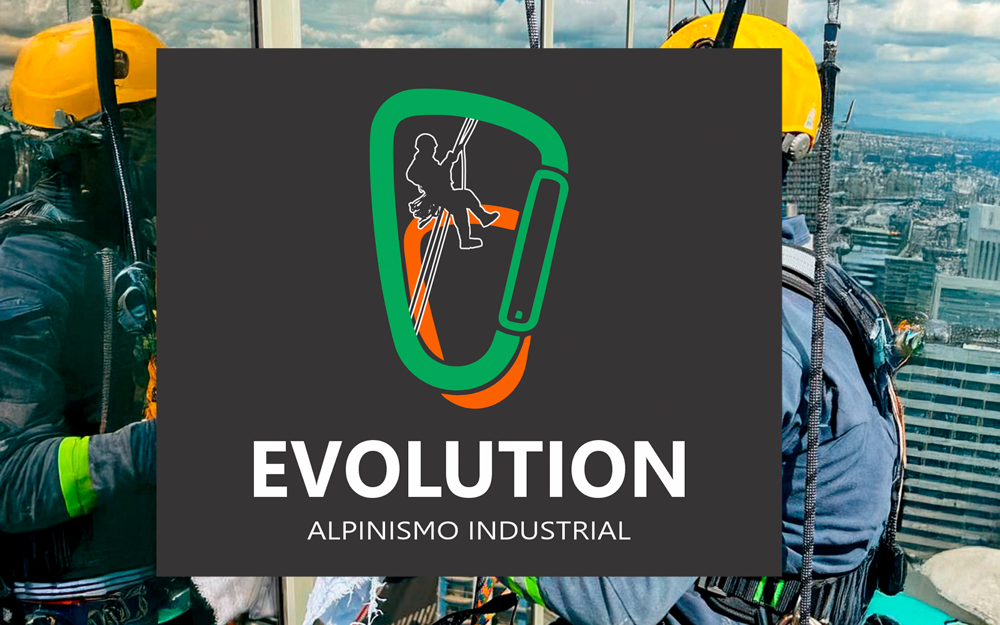
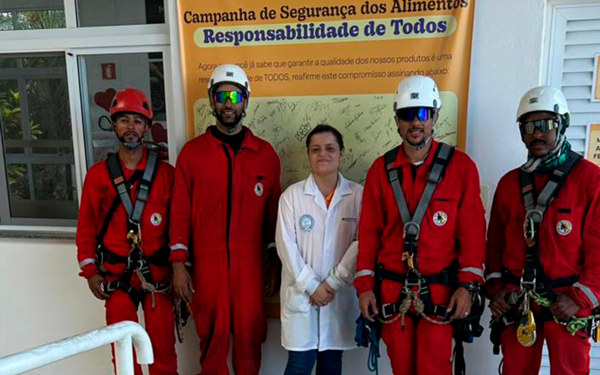

A Evolution Alpinismo Industrial segue os mais rigorosos padrões de segurança e normas técnicas, garantindo um serviço confiável e eficiente em altura.
Compromisso com a segurança e a conformidade em cada projeto.

Na Evolution Alpinismo Industrial, a segurança em trabalhos em altura é a nossa prioridade máxima em São Paulo. Todos os nossos serviços de alpinismo industrial são executados seguindo as mais rigorosas normas técnicas nacionais e internacionais, garantindo que cada etapa do processo seja realizada com total conformidade, responsabilidade e prevenção de acidentes.
Utilizamos equipamentos certificados e realizamos treinamentos periódicos com nossa equipe para manter o mais alto padrão de segurança. Adotamos normas como a IRATA (Industrial Rope Access Trade Association), NR-35 (Trabalho em Altura), NR-18 (Condições e Meio Ambiente de Trabalho na Indústria da Construção) e outras diretrizes específicas do setor, assegurando um ambiente de trabalho seguro e eficiente em São Paulo.
Todos os procedimentos são padronizados e acompanhados por profissionais experientes e certificados, que monitoram cada detalhe do serviço. Nosso compromisso é minimizar riscos, promover a integridade física de nossos colaboradores e clientes, e garantir a conformidade legal em todas as operações de alpinismo industrial em São Paulo.
Utilizamos os melhores equipamentos, submetidos a rigorosos testes de qualidade e segurança.
Nossa equipe participa regularmente de treinamentos e reciclagens para aprimorar os métodos de segurança.
Seguimos rigorosamente as normas técnicas e regulamentações aplicáveis para serviços em altura.
Procedimentos e protocolos são constantemente avaliados para garantir a segurança de todos os envolvidos.
Através da implementação de protocolos robustos e da utilização de equipamentos de alta qualidade, garantimos que nossos serviços de alpinismo industrial em São Paulo sejam executados com o máximo rigor em segurança. Nossa meta é sempre proporcionar tranquilidade e confiança aos nossos clientes, assegurando a integridade estrutural e a segurança de todos os envolvidos.

Nosso compromisso com a segurança em alpinismo industrial em São Paulo se reflete em cada etapa do trabalho, promovendo um ambiente seguro para a realização de serviços em altura.
Soluções seguras e inovadoras para serviços em altura.
Entre em ContatoEncontre respostas para as perguntas mais frequentes sobre as normas de segurança e os protocolos da Evolution Alpinismo Industrial.